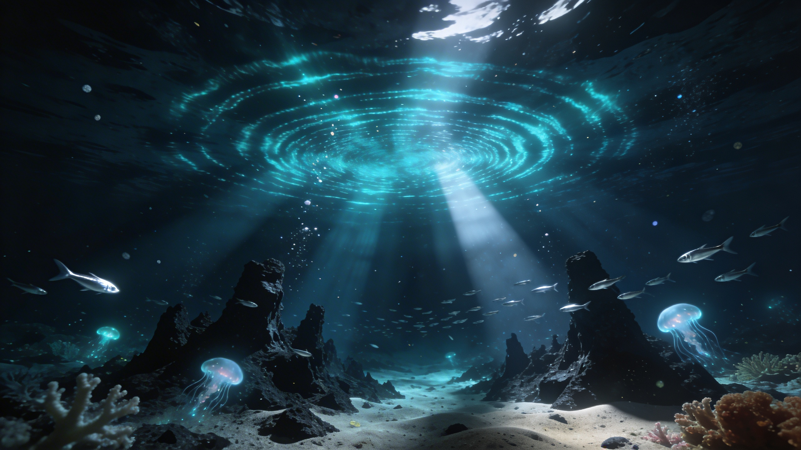
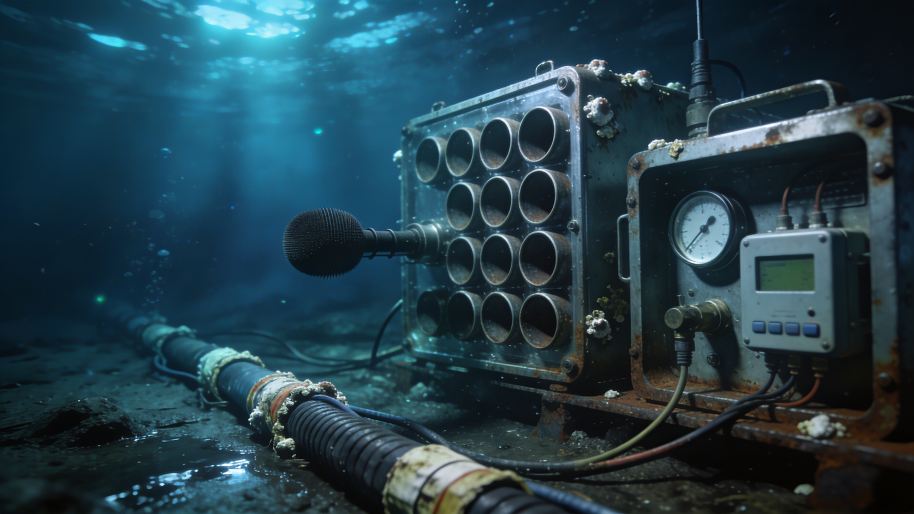

Generated by openrouter/qwen/qwen3.6-plus:free · April 2, 2026
In the summer of 1997, researchers at NOAA's Pacific Marine Environmental Laboratory (PMEL) were monitoring underwater volcanic activity across the southern Pacific Ocean using an array of hydrophones — essentially undersea microphones. Part of the Equatorial Pacific Ocean autonomous hydrophone array, these sensors were designed to pick up seismic activity, track whale populations, and monitor underwater earthquakes.
What they captured was something none of those things explained. A sound of extraordinary power rose in frequency over approximately one minute, starting from an ultra-low frequency and climbing up the spectrum. It was so loud that it was picked up by hydrophones spaced nearly 5,000 kilometers (3,000 miles) apart — spanning a vast portion of the South Pacific.

The deep Pacific Ocean off Antarctica's coast — where the Bloop was detected, thousands of meters beneath the surface. (AI-generated image)
NOAA described the Bloop as a sound of remarkable characteristics:
The hydrophone array that detected the Bloop wasn't ordinary equipment. It was part of a NOAA-designed system that augmented the U.S. Navy's SOSUS (Sound Surveillance System) — an underwater network originally built during the Cold War to detect Soviet submarines. The repurposing of military-grade submarine detection technology for ocean science would prove crucial in solving the mystery.

Hydrophone arrays on the ocean floor — the technology that captured the Bloop. (AI-generated image)
For nearly 15 years, the Bloop's origin was genuinely unknown. The sound's characteristics sparked a range of theories:
The sound is first detected. NOAA scientists begin analysis. Initial theories include volcanic activity, biological sources, and man-made noise.
NOAA's Christopher Fox tells CNN he believes the Bloop originates from ice calving in Antarctica.
Writing in New Scientist, David Wolman reports Fox's view that the Bloop "does resemble" a living creature's audio profile — but it would be "far more powerful than the calls made by any animal on Earth." Wolman's article opens the door for public speculation about giant sea creatures.
As more hydrophone data accumulates, NOAA researchers deploy sensors ever closer to Antarctica, studying sea floor volcanoes and earthquakes while cataloguing ice noise patterns.
A breakthrough: NOAA hydrophones in the Scotia Sea detect numerous icequakes with spectrograms very similar to the Bloop, while acoustically tracking iceberg A53a as it disintegrated near South Georgia Island. NOAA researchers confirm icequakes produce sounds of sufficient amplitude to be detected at ranges exceeding 5,000 km.
NOAA officially concludes the Bloop was the sound of an icequake — a massive iceberg cracking and breaking away from an Antarctic glacier. The mystery, at least scientifically, is resolved.
Icequakes (or cryoseisms) are sounds produced by the fracturing and movement of massive ice masses. Several mechanisms contribute to their distinctive acoustic signatures:
The most powerful icequakes occur during ice calving — when enormous blocks of ice break away from glaciers and ice shelves. As ice cracks under tension, the fracturing process generates intense low-frequency vibrations that travel enormous distances through water. Seawater acts as an excellent sound channel, allowing these signals to propagate with minimal loss of energy.
Even after calving, icebergs continue to produce distinctive sounds. Rubbing occurs when two or more compacted ice floes are forced together, creating shear deformation at their edges and triggering horizontally-polarized shear waves. Ridging happens when the ice bends or slides at the ridges, crushing air gaps between floe sections. Both processes emit acoustical signals during the ice's failure sequence.
"Ridging deformation revealed by this event indicate that the failure process is associated with a crushing process that seals air or vacuous gaps between ice floes. The acoustical signals emitted by this failure process are similar to those emitted from a collapsing air bubble in a fluid."
— Yunbo Xie, oceanographer, 1991
The Bloop's source was roughly triangulated to 50°S, 100°W — a remote point in the South Pacific Ocean, west of the southern tip of South America. Based on the arrival azimuth of the sound waves, NOAA researchers determined the iceberg(s) involved were most likely in one of three regions:
Despite NOAA's scientific explanation, the Bloop has never fully lost its aura of mystery. Several factors keep it alive in the popular imagination:
The Bloop represents one of the most satisfying resolutions in ocean acoustics: a mystery that started with genuine scientific uncertainty and was conclusively resolved through persistent observation. What began as speculation about unknown marine life became a tool — NOAA researchers now use icequake signatures to acoustically track iceberg disintegration, as they did with iceberg A53a in 2008.
And while the "Bloop" itself has not been heard again since 1997, icequakes detected by the same hydrophone networks serve as an important monitoring tool for understanding climate-driven changes in Antarctic ice sheet behavior. In a way, the Bloop taught us how to listen to the ocean's ice.
Images generated with OpenRouter's DALL-E 3 model equivalent (Seedream 4.5 by ByteDance).
Generated with openrouter/qwen/qwen3.6-plus:free